Final Video:
Abstract:
Our project was to build a procedurally generated solar system to explore other computer graphic techniques that were not discussed in class. We got our idea from a series of YouTube videos made by Sebastian Lague, where he goes through step-by-step how to create a rocky planet in Unity3D with continents, biomes, and oceans. We wanted to take this a step further by creating an entire solar system with rocky planets and gaseous planets orbiting around a star. The planet’s would be randomly generated and could later be edited by the user. When our demonstration is run, the user can see the orbits of the planets around the star and can zoom in on a specific planet to view and edit it.
Technical Approach:
The main process for creating rocky planets was outlined in Lague’s planet generation series. First, we needed a spherical mesh to represent the base of the planet. We started by taking a cubical mesh and making all the vertices equidistant from the center to get the sphere. The radius and base color of the planet were made to be edited so that the planet could be set up to have a random radius and color assigned to it.
To generate the land structures for the planets, we used the Simplex noise algorithm. Taking a noise file, we evaluate a point in the noise to generate an elevation value. The elevation values are applied to the sphere so that the sphere’s surface has varied heights. We then can adjust the shape based on roughness, strength, and its center. We then layered several noise layers to create a texture similar to rocky land. Once there is a satisfactory bumpy shape, the noise is overlapped with a normal sphere to make the bumpy texture look like continents on a planet. A second group of noise layers is then added to the first to create mountains and vary the land’s elevation. The mountainous structures are made to be ridgelike by applying the equation (1 - |sin(x)|)2.
Once the planet shape was generated, we created a shader to color the planet based on elevation and biome. Taking the elevation from the sphere’s base radius, a gradient changes the color so that areas of the same elevation have the same color. An elevation of zero would be the ocean. However, within the ocean, the ocean’s color was also darkened depending on the depth of the ocean. For biomes, the user can choose an amount of biomes and divides the planet by latitude to separate it into biomes. The edges between biomes are blended together using noise. Then, the different biomes can be colored differently to show a variety of land types on the planet.
Gaseous planets started out very similarly to the rocky planets. Like the rocky planets, the sphere was made by taking a cube and making all the vertices equidistant to the center. Then, the radius and color could be edited. However, the gaseous planets don’t have rocky terrain, so we focused more on giving these planets rings and stripes. The stripes on the planet’s surface were made similarly to how biomes were created on rocky planets. Each biome could be given a solid color to make them distinct, so we utilized this to vary the colors on the gaseous planets. At different latitudes, we changed the color slightly from the planet’s base color to simulate the gas movement that can be seen on these types of planets.
When making the shader for the gas planets, the shader for the biomes was used as a basis, but it was difficult to learn everything about Unity’s shader graph in order to make the shader work properly. Since the gaseous planet does not need to take elevation into account, it was difficult to change the shader graph to work without that portion. In the end, it was easier to implement elevation but keep the elevation values to zero.
To make the rings, we referenced Board to Bits Games’ YouTube video on how to make planet rings. First, we made a mesh that is essentially a cylinder with the center cut out. The YouTube video provided a ring texture image with transparent stripes that we applied to the mesh to give the rings the concentric circular texture. Then, the mesh’s color can be changed to match the planet’s base color.
It was also difficult to place the gaseous planets into the orbit when putting all the pieces together. While the rings would show up properly, there were issues with constructing the mesh. Because of this, it was difficult to show off the full product in presentations.
For the physical simulation of the solar system, we used Newton’s equation for gravity: F=
| 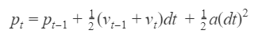 |
| 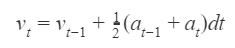 |
where p and v are position and velocity respectively. This is a simplified version of the famous Runge-Kutta method for integration. We found that this was slightly more accurate than Verlet integration, which we learned in class.
It is also important that the planets have an initial velocity that is tangential to the gravity vector. This allows the orbiting behavior. Otherwise, the planets would simply crash into the burning star, and we would be terrible gods. The higher this initial velocity is, the more elliptical the orbits become.
Results:
Examples of randomly generated planets:
| 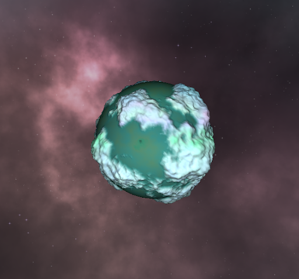 | 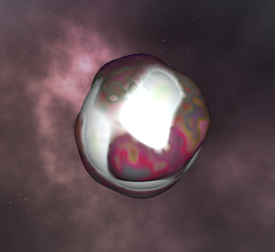 | 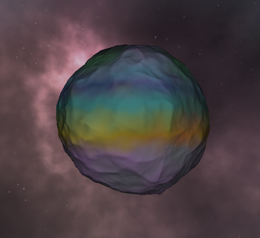 |
| 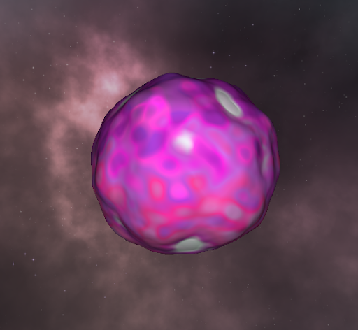 | 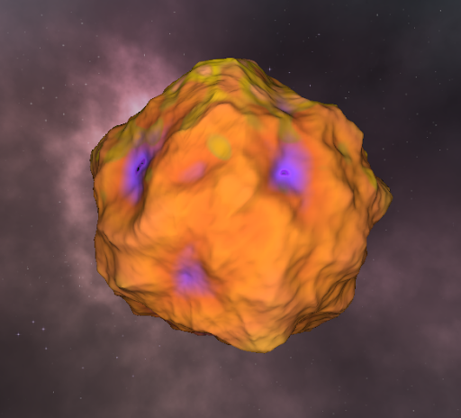 | 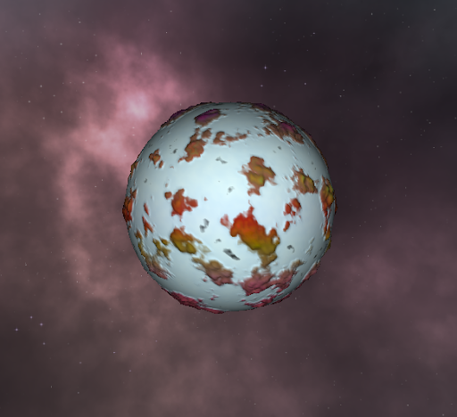 |
| 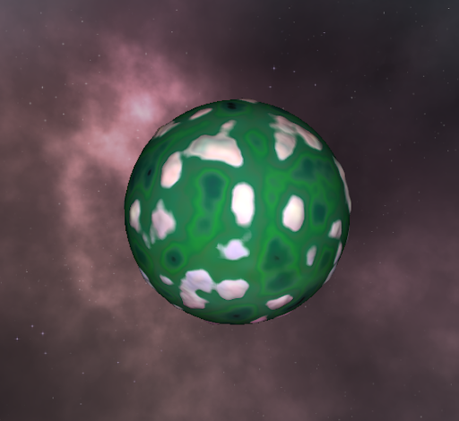 | 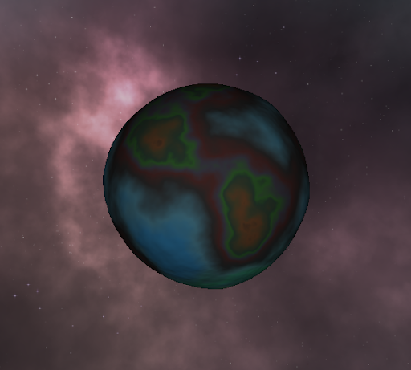 | 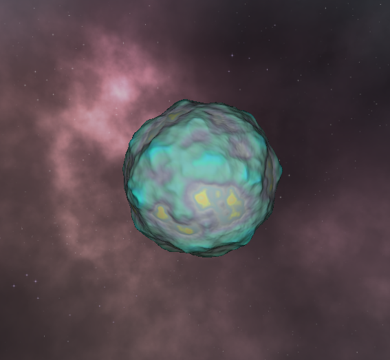 |
References:
Board to Bits Games. Making a Custom Planet Ring in Unity. https://www.youtube.com/watch?v=Rze4GEFrYYs
Lague, Sebastian. Unity Procedural Planet Generation. https://www.youtube.com/watch?v=QN39W020LqU&list=PLFt_AvWsXl0cONs3T0By4puYy6GM22ko8
Contributions from each team member:
James Fang: In charge of the physical simulation and camera system for navigating and viewing the solar system.
Lea Nakatsukasa: In charge of gaseous planets (rings, striped textures).
Nicholas Pels: